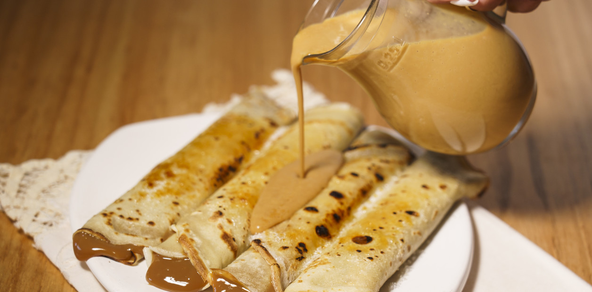

Inicio
Panqueques

Descripción
Los panqueques son la base perfecta para hacer platos salados y postres,
pero la preparación de los panqueques rellenos con dulce de leche es,
posiblemente, la forma más popular de consumirlos en Argentina y uno de
los postres más elegidos, tanto en los hogares como en restaurantes.
Esta receta se prepara de forma muy sencilla y los panqueques quedan super
esponjosos.
Ingredientes
- 500 cc de leche
- 250 g de harina 0000
- 1 pizca de sal
- 2 huevos
- 16 cucharadas de dulce de leche
Pasos
- En un bol, colocar los huevos y la leche.
-
Sumar la pizca de sal y la harina de a poco, mientras se bate para que
no se formen grumos. También se pueden hacer con licuadora de mano para
que no queden grumos.
-
Dejar reposar en la heladera media hora para que la harina se hidrate.
-
Calentar un sartén (o crepera de 20 cm de diámetro ideal) con materia
grasa y echar un cucharón de la preparación. Cuando coagule, voltearlo.
- Servir con abundante dulce de leche.